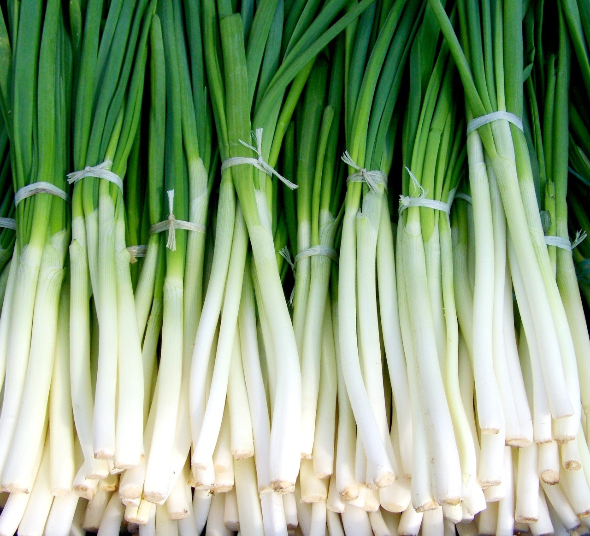
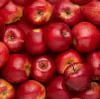

EJERCICIO 3
Crear una página web que muestre un catálogo de productos. Utiliza una tabla para mostrar el nombre y el precio de cada producto, y agrega una imagen para cada uno de ellos. Además, incluye una lista desordenada con características clave de cada producto.
Tabla de productos
| Producto |
Precio del producto |
Vista del producto |
Caracteristicas |
| Cebolla blanca |
0.50 |
 |
- Sabor distintivo: Las cebollas tienen un sabor característico y distintivo
- Versatilidad en la cocina: Las cebollas se utilizan en una amplia variedad de platos y cocinas
- Contenido de fitonutrientes: Las cebollas contienen varios fitonutrientes y compuestos antioxidantes
|
| Manzanas rojas |
1.50 |
 |
- Variedad de sabores: Las manzanas pueden ser dulces, ácidas o una combinación de ambos.
- Textura crujiente: La mayoría de las variedades de manzanas tienen una textura crujiente.
- Alto contenido de fibra: Las manzanas son ricas en fibra dietética.
|
| Bananas |
1.00 |
|
- Rica en potasio: Las bananas son una excelente fuente de potasio
- Energía rápida: Las bananas contienen carbohidratos de fácil digestión
- Fácil de transportar: La cáscara protectora de las bananas las hace ideales como refrigerio portátil
|
| Naranjas |
1.25 |
 |
- Elevado contenido de vitamina C: Las naranjas son conocidas por ser una excelente fuente de vitamina C
- Sabor cítrico: Las naranjas tienen un sabor característicamente refrescante y cítrico
- Versatilidad: Las naranjas se pueden consumir frescas, exprimidas en jugo
|
EJERCICIO 4
Crear una galería de fotos que muestre una serie de imágenes. Utiliza una tabla para organizar las imágenes en filas y columnas. Además, agrega una lista ordenada con descripciones breves de cada imagen.